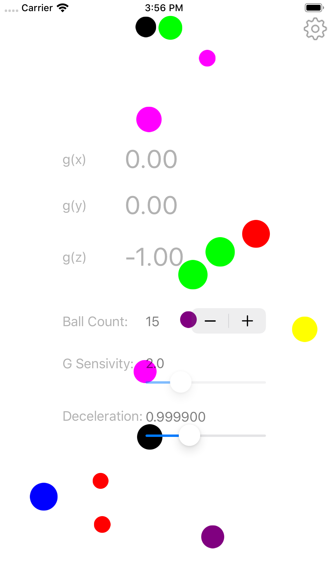

Colorful balls flying in the screen. Enjoy to see them. Gravity affect balls flying. Screen color is reflected screen leveling. Additional gravity by long press of screen. Gravity sensitivity and redemption rate are adjustable. Sleep timer is disable when external power is used. It's like old Macintosh screen saver.
|
|  |